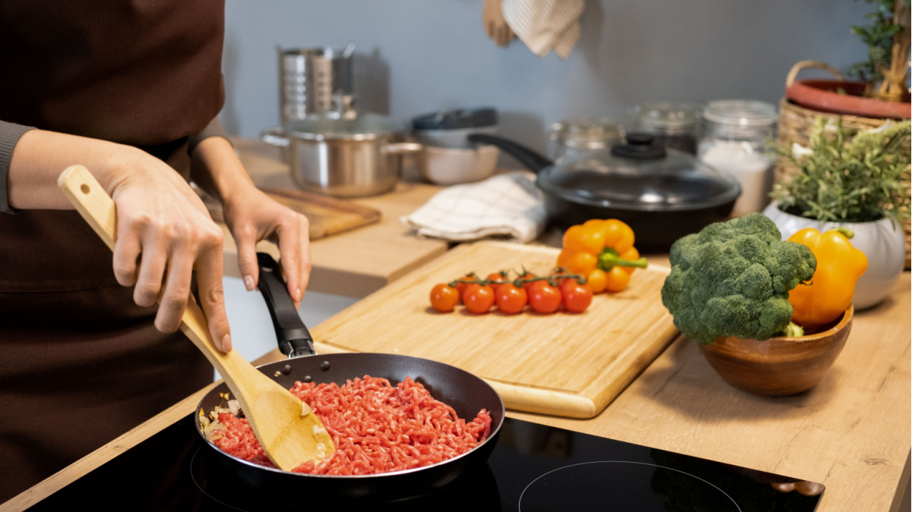
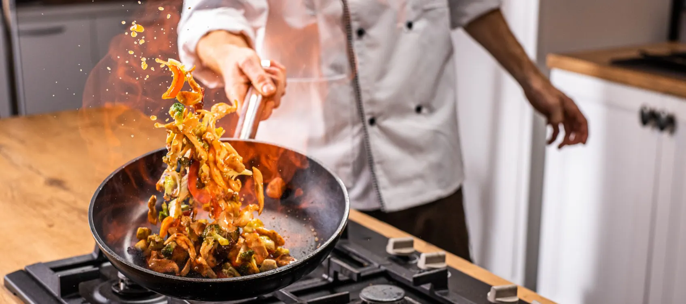
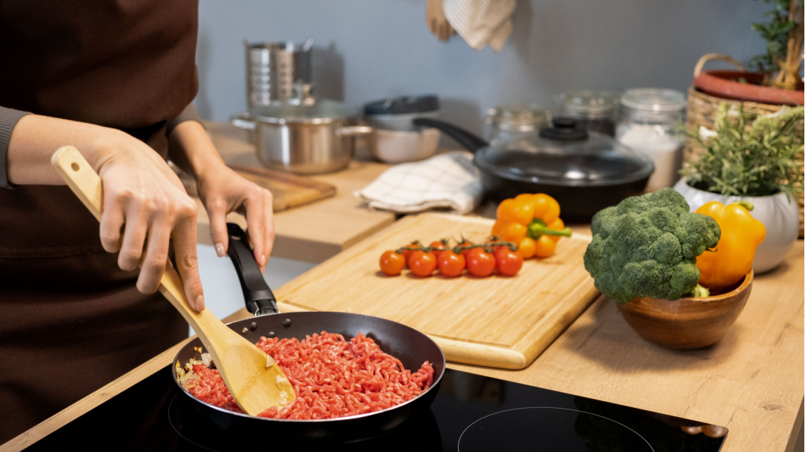
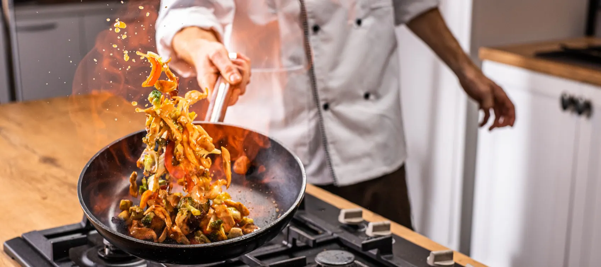

Welcome to my Culinary Haven!
Bonjour and welcome to the heart of my kitchen! I'm Isabella Russo, the culinary enthusiast behind this haven of flavors, Cooks Delight. Join me on a gastronomic journey where each dish carries a story, and every recipe is a crafted symphony of taste. Bonjour and welcome to the heart of my kitchen! I'm Isabella Russo, the culinary enthusiast behind this haven of flavors, Cooks Delight. Join me on a gastronomic journey where each dish carries a story, and every recipe is a crafted symphony of taste.
From Italian Roots to Global Palates
Born and raised in the vibrant culinary landscape of Italy, my journey with food began in the heart of my family's kitchen. Surrounded by the aroma of fresh herbs, the sizzle of pans, and the laughter of loved ones, I developed a deep appreciation for the art of cooking. My culinary education took me from the historic streets of Rome to the bustling markets of Florence, where I honed my skills and cultivated a love for the simplicity and authenticity of Italian cuisine.
Driven by a relentless curiosity, I embarked on a global culinary exploration, seeking inspiration from the rich tapestry of flavors found in kitchens around the world. From the spicy markets of Marrakech to the sushi stalls of Tokyo, each experience added a unique brushstroke to my culinary canvas.
Whether you're a seasoned home cook or just starting your culinary adventure, I'm delighted to have you here. Let's stir, simmer, and savor the beauty of creating something wonderful together.
Warmest regards,
Roza Shafiei
 



Quality Tools
Invest in high-quality knives, cutting boards, and cookware.
Essential Utensils
Have a variety of utensils, including spatulas, tongs, and ladles.
Measuring Accuracy
Use measuring cups and spoons for precise ingredient quantities.
Join the fun Subscribe now!
Subscribe to our newsletter for a weekly serving of recipes, cooking tips, and exclusive insights straight to your inbox.